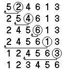

Чтобы
не отвлекаться при изложении алгоритмов на
особенности программирования на
конкретном языке программирования, принято
вести записи алгоритмов на псевдокоде.
Действия алгоритма описываются
полуформально. Можно пропустить
технические подробности, затеняющие суть
алгоритма.
Пример
алгоритма сортировки вставками.
Сортировка
вставками удобна
для коротких последовательностей. Входом
алгоритма является последовательность {а1,а2,…,аn},
представленная в виде массива А[1 .. n].
Обозначим число элементов в массиве через n.
Последовательность сортируется “на месте”
без использования дополнительной памяти.
После сортировки массив упорядочен по
возрастанию.

Insertion–Sort (A [ 1..n
])
- for j←2 to n
-
do Key ← A[j]
-
 добавить A[j] к отсортированной части A[1 …
j-1]
добавить A[j] к отсортированной части A[1 …
j-1]
-
i ← j - 1
-
while i>0 and A[i]>Key
-
do A[i+1]←A[i]
-
i ← i - 1
- A[i+1] ← Key
Основные
правила и соглашения псевдокода:
- Отступ
от левого поля
указывает на уровень вложенности. Это
делает излишним использование блочных
скобок ( {} – в Си, begin–end–в Паскале).
- Циклы while, for,
repeat и условные операторы if–then–else
имеют тот же смысл, что и в Си и Паскале.
- -
символ начинает
комментарий, идущий до конца строки.
- i←e
означает присваивание переменной i
значения e.
i←j←e
означает
одновременное присваивание значения e
переменной i и j.
- Индекс
массива указывается в квадратных скобках
- А[i]. Знак “ .. ” выделяет часть
массива А[i..j] от i–го до j–го значения.
Индекс начинается с 1.
- Переменные
локальны внутри функции.
- Часто
используются объекты, состоящие из
нескольких полей, называемых атрибутами
(прямое произведение). Значение поля
записывается как имя поля [имя объекта].
Например, длина массива считается
атрибутом массива и записывается как lingth[A].
- Переменная
означающая массив или объект считается указателем
на его данные. После присваивания y←x
для любого поля f выполняется f[y]←f[x].
Более того, если выполним f[x]←3, то будет
и f[y]=3, поскольку после y←x переменные y и
x указывают на один объект.
- Указатель
может иметь специальное значение
nil,
означающее отсутствие указуемого
объекта.
- Параметры
передаются функциям по значению:
вызванная функция получает собственную
копию параметров. Изменение параметра
внутри функции означает и снаружи не
видно. При передаче объектов копируется
указатель на данные.
Присваивание
внутри y←x заменить нельзя, а f[x]←3 или f[y]←3
- можно.